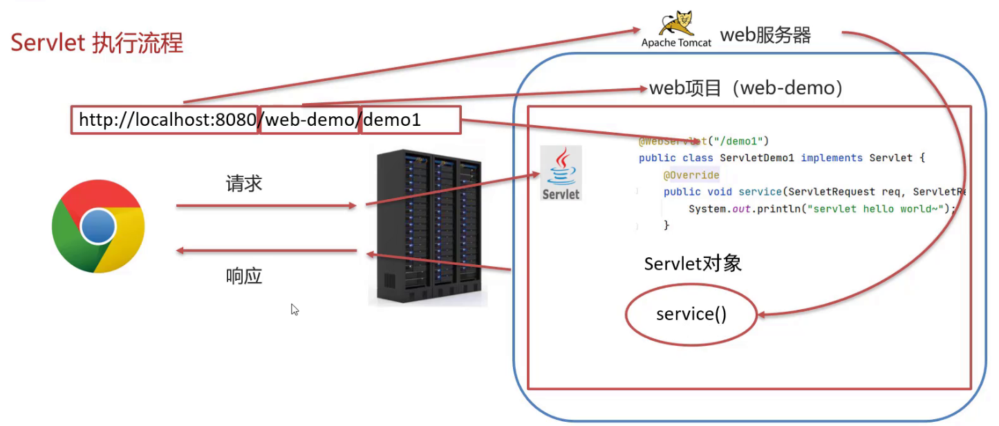
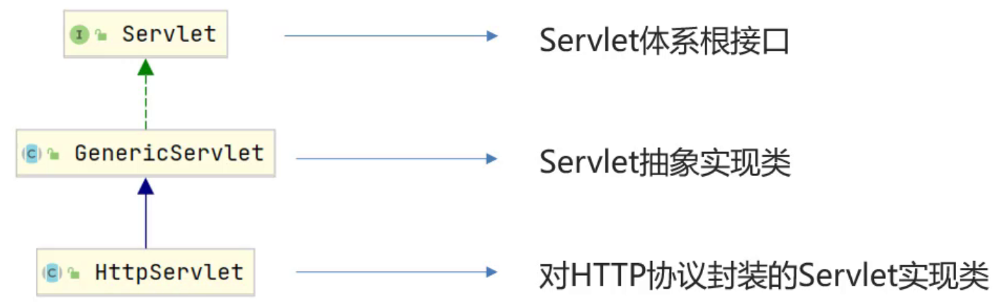

03_Servlet
Servlet是JavaWeb最为核心的内容，它是Java提供的一门动态web资源开发技术。
Servlet
使用Servlet就可以实现，根据不同的登录用户在页面上动态显示不同内容
Servlet是JavaEE规范之一，其实就是一个接口，将来我们需要定义Servlet类实现Servlet接口，并由web服务器运行Servlet
Servlet快速入门
1、导入Servlet依赖坐标
1 | <dependency> |
2、定义一个类，实现Servlet接口，并重写接口中所有方法
3、在类上使用@WebServlet注解，配置该Servlet的访问路径
1 |
Servlet执行流程
- 浏览器发出
http://localhost:8080/JavaWeb_03_Servlet/demo1请求，从请求中可以解析出三部分内容，分别是localhost:8080、JavaWeb_03_Servlet、demo1- 根据
localhost:8080可以找到要访问的Tomcat Web服务器 - 根据
JavaWeb_03_Servlet可以找到部署在Tomcat服务器上的JavaWeb_03_Servlet项目 - 根据
demo1可以找到要访问的是项目中的哪个Servlet类，根据@WebServlet后面的值进行匹配
- 根据
- 找到ServletDemo_01这个类后，Tomcat Web服务器就会为ServletDemo_01这个类创建一个对象，然后调用对象中的service方法
- ServletDemo_01实现了Servlet接口，所以类中必然会重写service方法供Tomcat Web服务器进行调用
- service方法中有ServletRequest和ServletResponse两个参数，ServletRequest封装的是请求数据，ServletResponse封装的是响应数据，后期我们可以通过这两个参数实现前后端的数据交互
生命周期
生命周期：指一个对象从被创建到被销毁的整个过程
Servlet运行在Servlet容器（web服务器）中，其生命周期由容器来管理，分为4个阶段：
加载和实例化：默认情况下，当Servlet第一次被访问时，由容器创建Servlet对象
默认情况，Servlet会在第一次访问被容器创建，但是如果创建Servlet比较耗时的话，那么第一个访问的人等待的时间就比较长，用户的体验就比较差，那么我们能不能把Servlet的创建放到服务器启动的时候来创建？
1
2
3
4
/* loadOnstartup的取值有两类情况
（1）负整数:第一次访问时创建Servlet对象
（2）0或正整数:服务器启动时创建Servlet对象，数字越小优先级越高 */初始化：在Servlet实例化之后，容器将调用Servlet的
init()方法初始化这个对象，完成一些如加载配置文件、创建连接等初始化的工作，该方法只调用一次请求处理：每次请求Servlet时，Servlet容器都会调用Servlet的
service()方法对请求进行处理服务终止：当需要释放内存或者容器关闭时，容器就会调用Servlet实例的
destroy()方法完成资源的释放。在destroy()方法调用之后，容器会释放这个Servlet实例，该实例随后会被Java的垃圾收集器所回收。
Servlet体系结构
我们将来开发B/S架构的web项目，都是针对HTTP协议，所以我们自定义Servlet，会通过继承HttpServlet的方式代替实现接口。
1 |
|
发送GET请求就不说了，发送POST请求需要在html页面中创建一个表单传递请求参数，举个例子：
1 | <body> |
为什么HttpServlet中要根据请求方式的不同，调用不同的方法？
前端发送GET和POST请求的时候，参数的位置不一致，GET请求参数在请求行中，POST请求参数在请求体中，为了能处理不同的请求方式，我们得在service方法中进行判断，然后写不同的业务处理。
urlPattern配置
Servlet类编写好后，要想被访问到，就需要配置其访问路径。
urlPattern配置规则：
- 精确匹配
1 | //配置路径 |
访问路径为 http://localhost:8080/JavaWeb_03_Servlet/user/select
- 目录匹配
1 | //配置路径 |
访问路径 http://localhost:8080/JavaWeb_03_Servlet/user/aaa 、http://localhost:8080/JavaWeb_03_Servlet/user/bbb 等等
- 扩展名匹配
1 | //配置路径 |
访问路径为 http://localhost:8080/JavaWeb_03_Servlet/任意.do
如果路径配置的不是扩展名，那么在路径的前面就必须要加
/否则会报错；如果路径配置的是
*.do,那么在*.do的前面不能加/,否则会报错！
- 任意匹配
1 | //配置路径 |
访问路径为 http://localhost:8080/JavaWeb_03_Servlet/任意
当我们的项目中的Servlet配置了 “/“,会覆盖掉tomcat中的DefaultServlet,当其他的url-pattern都匹配不上时都会走这个Servlet。DefaultServlet是用来处理静态资源，如果配置了”/“会把默认的覆盖掉，就会引发请求静态资源的时候没有走默认的而是走了自定义的Servlet类，最终导致静态资源不能被访问。
上面这段话如何理解呢？我们在访问静态资源例如html静态页面时，http://localhost:8080/JavaWeb_03_Servlet/a.html，但是由于进行了任意匹配覆盖了DefaultServlet，在访问该路径时就会走这个任意匹配的Servlet，而a.html就访问不到啦。
XML配置
前面对应Servlet的配置，我们都使用的是@WebServlet,这个是Servlet从3.0版本后开始支持注解配置，3.0版本前只支持XML配置文件的配置方法。这里只需要了解一下即可，现在几乎不会在web.xml中进行配置了。
1 | <web-app> |